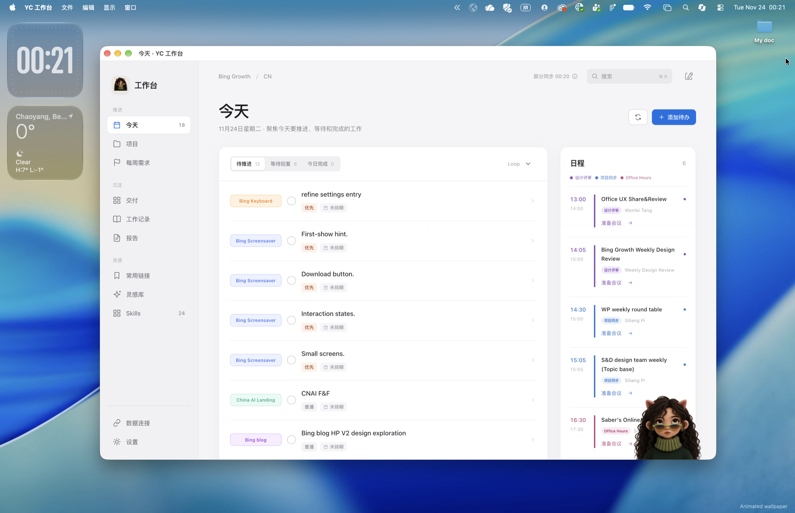
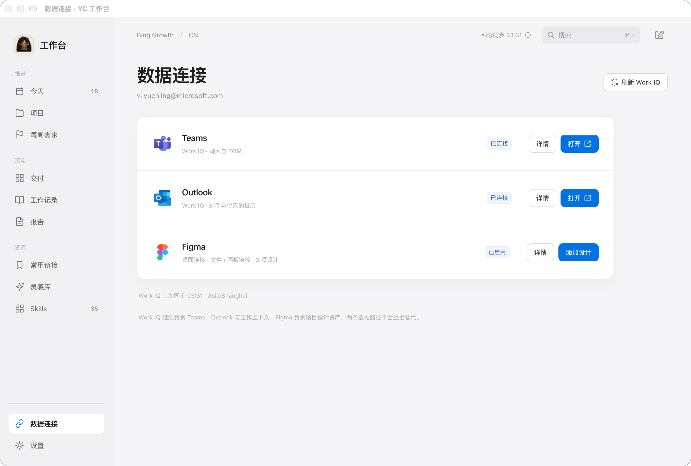
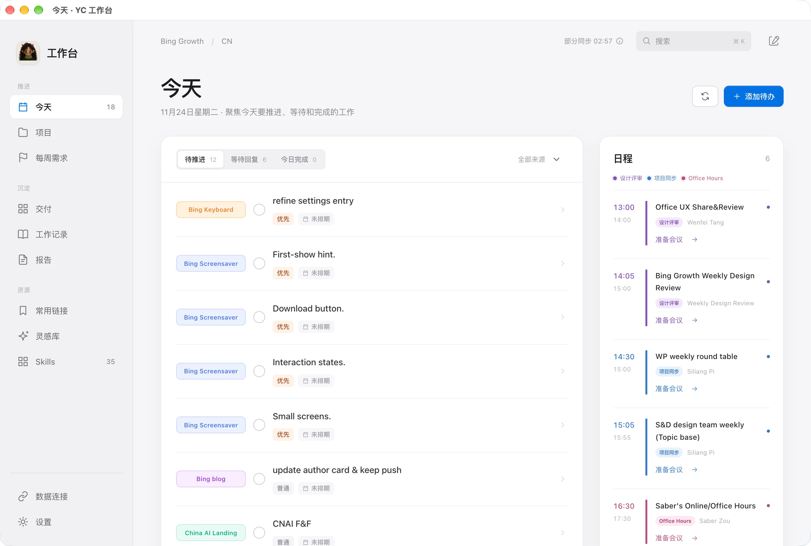
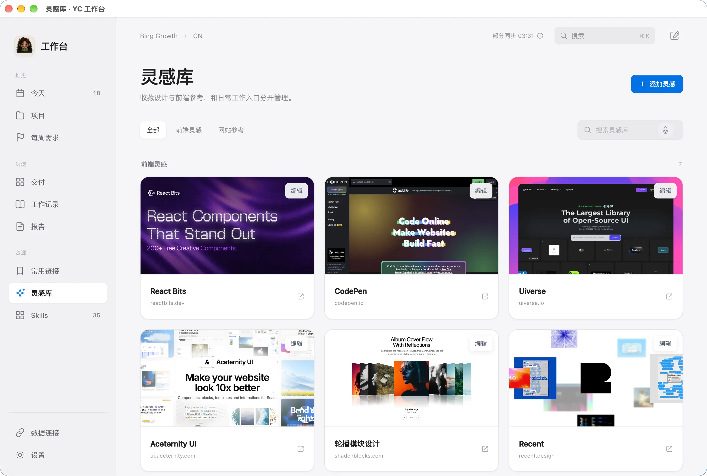
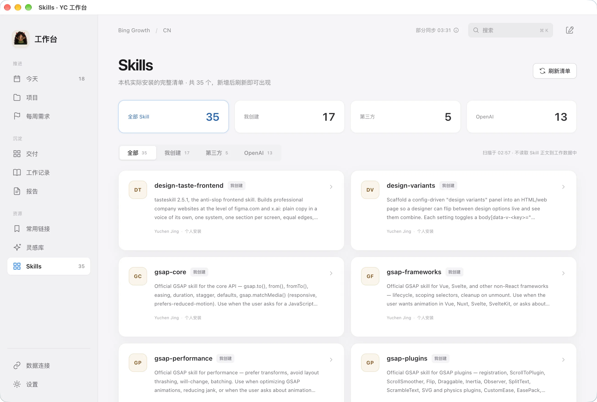

Teams 原文
“评审前请把小屏状态补齐，尤其是第一次打开和没有数据的时候。”
Weekly design review · 查看原消息
macOS 本地应用 · 个人使用中
它把聊天、邮件、日程和语音里的待办整理到一起，并保留原始来源。只有我确认后，内容才会进入工作记录。

我经常在 Teams 里收到请求，在 Outlook 里追踪项目进程，在 Loop 里 sync 需求，有时还会用语音补充。当琐碎的事情变多，难免出现遗漏。
“设计评审前补齐交互状态。”
15:05 · Weekly design review
Small screens · 待确认
“把这条记到 Bing Screensaver。”
YC WorkBuddy 通过 Work IQ 接入 Teams 和 Outlook 中的沟通、日程与项目动态，并通过 Figma 连接补充设计文件和画板链接。不同来源被组织为统一的工作上下文，为后续的待办识别、来源核对和工作记录提供依据。

工作台先从消息和日程中找出可能要做的事。我查看原文、修改内容，确认后才保存。
从 Teams 和 Outlook 读取消息、会议与原始链接。
从原文中找出需要推进、等待回复或已经完成的事。
我可以修改、删除或重新分类；系统不会直接写入记录。
确认后的内容保存在本地，可用于周报和月报。
系统先整理，我核对来源，确认后再保存。

在任何应用里长按 Fn 开始说话。松开后，本地 Whisper 完成识别，并把文字写回刚才的光标位置。
系统保存原文链接，不只保存整理后的文字。确认前可以修改或删除；读取失败时，已有结果也不会被清空。
“评审前请把小屏状态补齐，尤其是第一次打开和没有数据的时候。”
Weekly design review · 查看原消息
保留来源、编辑记录和项目归属，周报引用时仍能回看。

